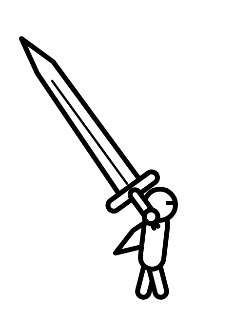
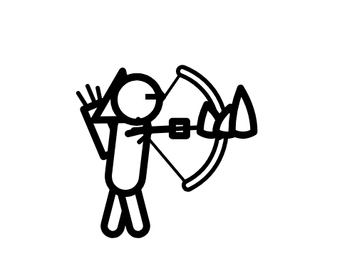
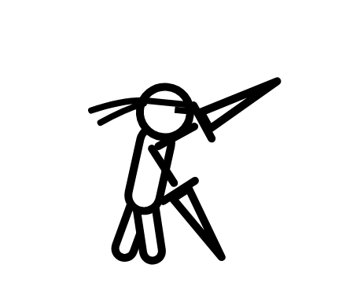

Story mode
Planned
The idea
The same road, told in chapters. Almost no words. The march itself is the story.
Story mode walks the road you already know, the plain, the ruins, the fortress and the void, but slower, and with things to find along the way. It still has no dialogue trees, no quests, no levels and no loot. It adds places, not power: you get better at the march, not stronger.
What it tells, it tells through the road itself: what the ruins used to be, who built the fortress and why it faces the way it does, the marks left by people who walked this way before you. And between chapters, a few full-screen ink panels, each with a single line of text.
Premise
There is a road that runs across the white. People say there is a door at the end of it, and that the door opens onto whatever you wanted most. Many have set out. Nobody has come back to say whether it's true.
You are one more walker on the road.
Three reasons to march
Each class walks the same road for its own reason. The game hints at those reasons. It never states them, and never says whether the door grants them.

The Warrior
Carries a sword too large for any fight they remember. Along the road: broken blades planted in the ground, each in the same place a sword is left when a walker falls.

The Archer
Follows the fires. Every night of the march there is a cold campfire ahead, already burnt out, as if someone is always one day in front.

The Rogue
Has walked this road before, and turned back. The thieves seem to know them.
Chapters
| Chapter | Where | What happens | Set piece |
|---|---|---|---|
| Prologue: The First Step | The plain | Learning to walk the lanes. The first waves, the first thief, the first night. | A Brute holding the ford across a dry river. |
| I: What Was Left | The ruins | A city that set out on the march together and stopped here. Its arches all face down the road. | A collapsed hall full of Splitters. |
| II: The Wall | The fortress | A fortress built across the road, facing the way you came, as if to keep walkers out of the void. Its garrison are walkers who stopped. | The Gatekeeper: an Elite who guards the gate and doesn't want to fight you. |
| III: The White | The void | The road fades. The horizon empties. Enemies come less often and hit harder. | The Echo: a figure that fights exactly like your own class. |
| Epilogue: The Door | The end of the road | The monolith rises. The light. The same question as always. | None. |
Along the road
Stones
Short lines carved into stones by earlier walkers. Optional to read, never explained. For example: "I thought it would be further." "Don't look back at the fortress." "The light is not warm."
Relics
The weapons of fallen walkers, left planted in the road, just as yours is when you fall. Walking past one fills a line in the chapter's record.
Camps
The nights become places: a ring of stones, a cold fire, thieves in the dark. Resting there is where a chapter is saved.
Ink panels
Between chapters: one full-screen drawing in the outline style, one line of text, then the road again.
How it plays
- Chapters save at camps. Unlike arcade mode, falling for the last time sends you back to the last camp, not to the start.
- Same combat. The lane rule, the three classes, magic and thieves all work exactly as in arcade mode.
- No progression systems. No experience, no gear, no skill trees. Stones and relics are for reading, not for power.
- One run per class. Each class's chapters are the same road, seen with different things left along it.
- Short. Meant to be finished in an evening per class.
What it will never say
Story mode ends the way arcade mode does: at the door, in the light, with the question "What did you seek?" It will not say what the walkers wanted, what is behind the door, whether they get it, or whether getting it is good. That stays yours.
Still open
- Whether the three classes' stories meet (does the Archer ever find whoever keeps lighting the fires?).
- How much text is too much. The current plan is under a hundred lines for the whole mode.
- Music: the arcade mode is almost silent. Story mode might add a single instrument.
- The look of the Echo, and of the Gatekeeper's gate. Concept art will appear on the Art page.